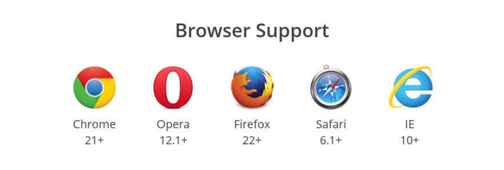

ThoughtWorks®
HTML5,CSS3
HTML5
Tags Category
- flow, heading, sectioning, phrasing, embedded, interactive, metadata


Strict Rule
- a not contain interactive element(a, button, select)
- p not block element (p, div, h1~h6, ol, ul, li, dl, dt, dd, form)
语义化
每个标签做它该做的事
- header, footer, nav, section, article, aside, figure
- canvas, XML:SVG
- audio,video
- time
- input[type="email | tel | url | ... "][placeholder][required], datalist
Canvas
Q & A
css3
- border-radius: 10px
- box-shadow: 2px 2px 5px #ccc inset
- text-shadow: 2px 2px 5px #ddd
- background-size: 10px 10px | 50% | cover | contain
- opacity
- background-color:rgba(255, 255, 255, .5)
flex
参考链接

flex容器内float，clear，vertical-align属性会失效

main axis, cross axis
Layout Practice
Animation
- transform
- transition
- @keyframes，animation
2D & 3D transform
Example
Baymax
transition
animation & @keyframes
CSS Compatibility
- -moz-*
- -webkit-
- -ms-
- -o-